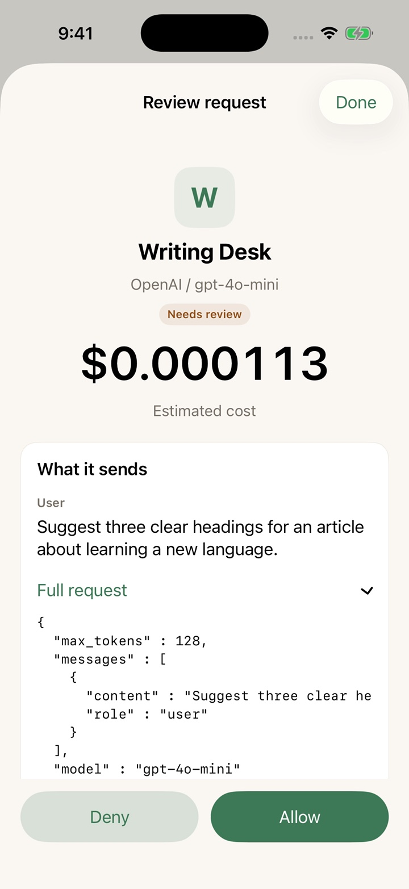

Keyala
KeyalaUse AI apps. Pay only for what you use.
Bring your own AI key. Before anything runs, you see the prompt and the price on your phone. Say yes, and you get a receipt. The app never sees your key.
Who does what
Three parts, one simple deal. Nobody pays for someone else, and nobody gets your key.
The builder makes the app
One line of code to connect. No keys to guard, no token bill.
Keyala asks you first
Shows the request and its price, waits for your yes, keeps the receipt.
You decide and pay
Approve on your iPhone. Your provider bills only the calls you allowed.
See it in the app


Native app demo with a local mock provider.
Per call, not per month
Two ways to pay for AI apps. Only one of them charges you when you're not using it.
A subscription per app
- Monthly fee whether you use it or not
- Hard to see what you actually used
- Cancel flows, renewals, reminders
- A new plan for every new tool you try
Your key, billed per call
- Your provider bills only what ran, at their price
- Every call has a receipt you can open
- Set a budget, or stop any app with one tap
- One key works across every Keyala-ready app
Keyala is free during the beta and adds no markup. Provider prices are set by the provider.
For developers
Launch without a token bill
Grow your audience without growing your costs. Each user brings their own key.
Change the base URL
Official OpenAI and Anthropic SDKs, as they are.
base_url="https://app.keyala.io/v1/openai"Add the connect button
One script tag. Users pair by QR, link or code.
<keyala-connect app="app_…">See how it's used
Calls, cost and models in your dashboard. Never your users' prompts.
Register your app
Every app registers once before it can connect users. It is free and takes about a minute in the console.
Sign in to the console
Open app.keyala.io/console and scan the code with the Keyala app, or use the web password you set in the app.
Create the app
Open My apps and fill in Create app. The name is what users see on their phone. A website also needs its allowed origin: the scheme and host only, like
https://you.github.io, nothttps://you.github.io/project/.Copy the two values
You get an App ID and an App secret. The secret is shown only once, so save it in a password manager right away.
Put the App ID in your code
A website passes it to
Keyala.connect({ app: "app_..." }). A server keeps the secret and uses it to start connections.
App ID public
Starts with app_. It names your app. Safe to put in web page code and in Git.
App secret private
Starts with keyala_app_. It proves you own the app: a server uses it to start connections, and it opens your usage report. Never put it in a web page, an iPhone app or Git. It never gives access to anyone's API key.
Questions
What happens if I do not register?
Your app cannot connect anyone. Every connection names a registered app, and the user's phone shows that name before they approve.
Why register in the console rather than with the API?
Apps created in the console belong to your account. You see their usage report (calls, cost, models, countries, busiest hours) whenever you sign in, and you can rotate a lost or leaked secret without the old one. An app made earlier with POST /v1/apps can be added under My apps with Already have an app? and its secret.
How do I know it worked?
The app is listed under My apps with its App ID. Then open your page and connect: Keyala's dialog shows a QR code (not an error), and the phone shows your app name, plus "from" your site for a website. After the first approved call, the app's numbers in the console go up.
The page says "this origin is not allowed for this app".
The page's origin is not one you registered. Compare the address bar's scheme and host with the app's allowed origins. Fix it in My apps with Edit; the change applies to new connections at once and the App ID stays the same.
I lost the secret, or it leaked.
In My apps, open the app and choose Rotate secret. The old secret stops working at once. Users' connections keep working, since they never depended on the secret.
Do I need the secret for a website?
Not in the page. A website only needs the App ID and its allowed origin. Keep the secret for the usage report and for rotating it.
Can I change or delete an app?
Yes, in My apps. Edit changes the name, homepage and allowed origins; people already connected keep working. Delete asks you to type the app name, then stops the secret, cuts off every connected user at once and refuses waiting calls. It cannot be undone; users keep their history.
Trust, in plain words
Keys are never sharedKeys are encrypted at rest and never sent to developers. Only the last 4 characters are ever shown.
Your content is privatePrompts and responses are encrypted per user and deleted after 30 days.
You stay in chargeFirst connections always ask each time. Before a call you see an estimate; afterwards, the cost from the usage the provider reported.
Honest about the limitsKeyala is an experimental personal project. Its server decrypts your key to forward the calls you approve, so you are trusting its operator.
Where Keyala is today
Ready to use
Approve calls on iPhone · OpenAI, Anthropic, OpenRouter · ask, count, budget or trust · full history and receipts · revoke anytime · web console · open source and self-hostable
Coming along
How-to videos · open TestFlight · exploring: coupons so builders can cover your first try
Fair for people who use it. Fair for people who build it.
An experimental, open-source project. Honest about its limits.